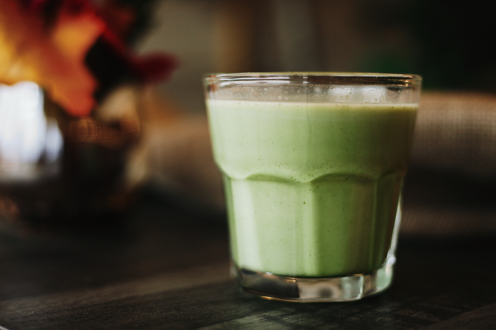

카페 레시피의 공유
(Sharing recipes a cafe)
더블 초코 라떼(double chocolate latte)
그린티 라떼(Vanila latte)
밀크티(Mocha Latte)
Coffee - Latte
더블 초코 라떼(double chocolate latte)
뜨거운 물 30㎖를 붓는다.
초코 소스 1펌프, 초코 가루 1스푼을 넣는다.
소스와 가루가 녹게 잘 젓는다.
우유만 180㎖가량 넣는다.
초코 소스로 모양을 낸다.
그린티 라떼(Green tea latte)

뜨거운 물 30㎖를 붓는다.
그린티 가루 한 스푼을 넣는다.
캐러멜이 녹게 잘 젓는다.
우유만 180㎖가량 넣는다.
그린티 가루로 모양을 낸다.
밀크티(Milk tea)
뜨거운 물 30㎖를 붓는다.
밀크티 가루를 한 스푼 넣는다.
가루가 녹게 잘 젓는다.
우유만 180㎖가량 넣는다.
밀크티 가루로 모양을 낸다.
뜨거운 물로 먼저 가루와 시럽을 녹여주시면 쉽게 섞으실 수 있습니다.